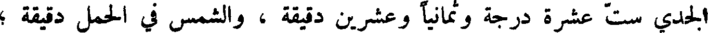
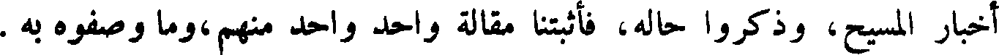

File: 000720.gt.txt (if the image is defective, simply delete all Arabic text and the line will be excluded)
مع ولدي يوسف الذين ولدا بمصر ، وأعطاهم أرضا ، وقال : ازرعوا ،
File: 000721.gt.txt (if the image is defective, simply delete all Arabic text and the line will be excluded)
فما خرج فلفرعون الخمس .
File: 000722.gt.txt (if the image is defective, simply delete all Arabic text and the line will be excluded)
ولما حضرت يعقوب الوفاة جمع ولده وولد ولده ، فبارك عليهم ، ودعا
File: 000723.gt.txt (if the image is defective, simply delete all Arabic text and the line will be excluded)
المسيح عيسى بن مريم
File: 000724.gt.txt (if the image is defective, simply delete all Arabic text and the line will be excluded)
وكانت حنة امرأة عمران قد نذرت أن وهب الله لها ولد أن تجعله لله ،
File: 000725.gt.txt (if the image is defective, simply delete all Arabic text and the line will be excluded)
فلما ولدت مريم دفعتها إلى زكرياء بن برخيا بن شوا1 بن نحرائيل بن سهلون بن
File: 000726.gt.txt (if the image is defective, simply delete all Arabic text and the line will be excluded)
ارسوا بن شويل بن يعود2 بن موسى بن عمران ، وكان كاهن المذبح ، فلم يزل.
File: 000727.gt.txt (if the image is defective, simply delete all Arabic text and the line will be excluded)
كذلك حتى إذا كملت سبع عشرة سنة بعث الله إليها الملك ليهب لها ولدا زكيا ،
File: 000728.gt.txt (if the image is defective, simply delete all Arabic text and the line will be excluded)
فكان من خبرها ما قد قصه الله عز وجل ، حتى اشتملت على الحمل ، فلما
File: 000729.gt.txt (if the image is defective, simply delete all Arabic text and the line will be excluded)
كملت أيامها طرقها المخاض ، على مال قال الله ، عز وجل ، ووصف من حالها
File: 000730.gt.txt (if the image is defective, simply delete all Arabic text and the line will be excluded)
وحاله ، وكلامه من تحتها ، وكلامه في المهد .
File: 000731.gt.txt (if the image is defective, simply delete all Arabic text and the line will be excluded)
وكان مولده بقرية يقال لها بيت لحم من قرى فلسطين ، وكان ذلك يوم
File: 000732.gt.txt (if the image is defective, simply delete all Arabic text and the line will be excluded)
الثلاثاء لأربعة وعشرين يوما خلت من كانون الأول .
File: 000733.gt.txt (if the image is defective, simply delete all Arabic text and the line will be excluded)
قال ماشاء الله المنجم : كان الطالع للسنة التي ولد فيها المسيح في الميزان
File: 000734.gt.txt (if the image is defective, simply delete all Arabic text and the line will be excluded)
ثماني عشرة درجة ؛ والمشتري في السنبلة إحدى وثلاثين دقيقة راجعا ؛ وزحل في
File: 000735.gt.txt (if the image is defective, simply delete all Arabic text and the line will be excluded)

الجدي ست عشرة درجة وثمانيا وعشرين دقيقة ، والشمس في الحمل دقيقة ؛
File: 000736.gt.txt (if the image is defective, simply delete all Arabic text and the line will be excluded)
والزهرة في الثور أربع عشرة درجه ؛ والمريخ في الجوزاء إحدى وعشرين درجة
File: 000737.gt.txt (if the image is defective, simply delete all Arabic text and the line will be excluded)
وأربعا وأربعين دقيقة ؛ وعطارد في الحمل أربع درجات وسبع عشرة دقيقه .
File: 000738.gt.txt (if the image is defective, simply delete all Arabic text and the line will be excluded)
وأما أصحاب الإنجيل فلا يقولون انه تكلم في المهد ، ويقولون : أن مريم
File: 000739.gt.txt (if the image is defective, simply delete all Arabic text and the line will be excluded)
كانت مسماه برجل يقال له يوسف من ولد داود ، وإنها حملت ، فلما قرب
File: 000740.gt.txt (if the image is defective, simply delete all Arabic text and the line will be excluded)
وضع حملها سار بها إلى بيت لحم ، فلما ولدت ردها إلى ناصرة من جبل الجليل؛
File: 000741.gt.txt (if the image is defective, simply delete all Arabic text and the line will be excluded)
فلما كان في اليوم الثامن ختنه على سنة موسى بن عمران؛ وقد وصف الحواريون
File: 000742.gt.txt (if the image is defective, simply delete all Arabic text and the line will be excluded)

أخبار المسيح، وذكروا حاله، فاثبتنا مقالة واحد منهم ،وما وصفوه به .
File: 000743.gt.txt (if the image is defective, simply delete all Arabic text and the line will be excluded)
وكان الحواريون أثنى عشر من أسباط يعقوب وهم : شمعون بن كنعان
File: 000744.gt.txt (if the image is defective, simply delete all Arabic text and the line will be excluded)
ومخلصي ، بعد أن أحاطت بي سكرات الموت ، وقربت مني ، واحتوت
File: 000745.gt.txt (if the image is defective, simply delete all Arabic text and the line will be excluded)
علي أحداث الهلكة ، فدعوتك في ضيقي واستعنت بك يا الهي ، فسمعت صوتي
File: 000746.gt.txt (if the image is defective, simply delete all Arabic text and the line will be excluded)
فاستنقذتني من الذين اعتوروني واضطهدوني ، وكنت ناصري ، فأخرجتني من
File: 000747.gt.txt (if the image is defective, simply delete all Arabic text and the line will be excluded)
الضيق إلى الفرج ، فما أعد لك يا رب ، وأنصرك للمتوكلين عليك ، لأنه
File: 000748.gt.txt (if the image is defective, simply delete all Arabic text and the line will be excluded)
وصيرهم خولا خاضعين ، وألهمني شكرك .
File: 000749.gt.txt (if the image is defective, simply delete all Arabic text and the line will be excluded)
وكان داود إذا سبح الله بهذا الكلام رفع صوتا حسنا لم يسمع قلال مثله ، وكان
To Save: `Ctrl+s`, make sure to choose `Webpage, complete`!